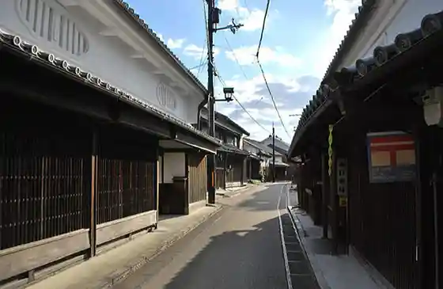
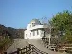
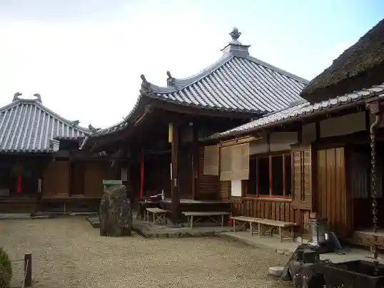

Sakae Yamadera
Gojo, Nara · 0747-24-5557 · Official / source link
Gojo Shin Town Tori
Gojo, Nara · 0747-22-4001 · Official / source link

Oto Kosumikku Park Hoshi no Kuni
Gojo, Nara · 0747-35-0321 · Official / source link

Kongoji (Gojo)
Gojo, Nara · 0747-23-2185 · Official / source link

Go Shin Tetsudo Ato
Gojo, Nara · Official / source link
Roadside Station Yoshino Michi Oto
Gojo, Nara · Official / source link
Kana Nama Umebayashi
Gojo, Nara · 0747-33-0301 · Official / source link
Nembutsuji (Gojo)
Gojo, Nara · Official / source link
Yoshinogawa (Gojo Ryuiki)
Gojo, Nara · 0747-25-3077 · Official / source link
Fujioka Ie House
Gojo, Nara · 0747-22-4013 · Official / source link
Nama Hasu Tera
Gojo, Nara · Official / source link
Ho no Shujaku Satsueichi Kinenhi
Gojo, Nara · Official / source link
Kaki Museum
Gojo, Nara · 0747-24-0061 · Official / source link
Toku Zen Tera
Gojo, Nara · Official / source link
Ten Shrine (Gojo Oto Town So Tani)
Gojo, Nara · 0747-24-2011 · Official / source link
Tenchi no Terasu Yushio FARM & EXPERIENCE
Gojo, Nara · 0747-26-1831 · Official / source link
Ten Shrine (Gojo Oto Town Shinohara)
Gojo, Nara · 0747-24-2011 · Official / source link
Shita Village Berii Sono
Gojo, Nara · 0747-24-3830 · Official / source link